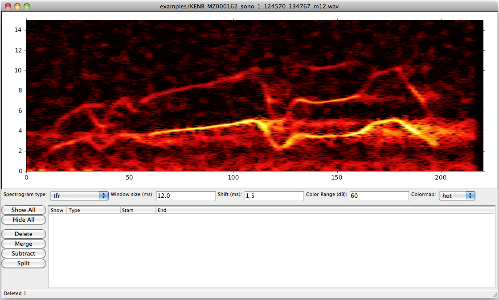
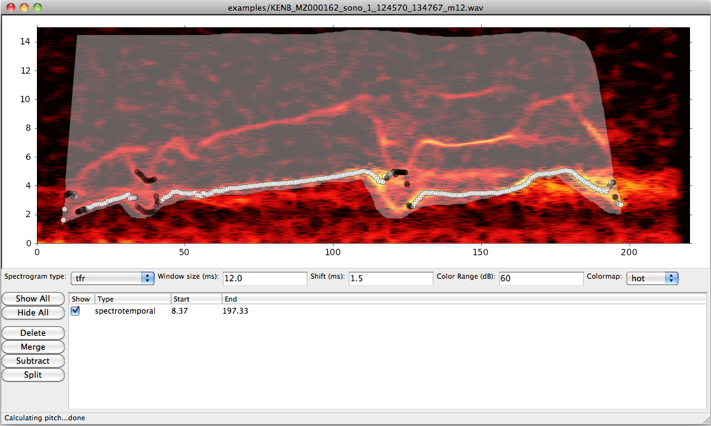
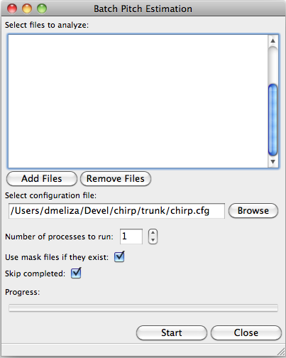
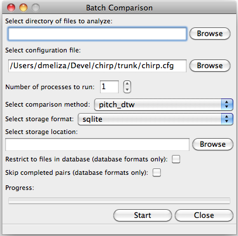

Chirp: Analysis and Comparison of Bioacoustic Recordings
Table of Contents
Installation instructions
Chirp can be installed as a standalone application on Mac OS X and Windows, or as a python distribution under OS X or *nix. The standalone application consists only of the GUI; the distribution includes the GUI as well as several useful command-line scripts.
Prerequisites
The Python distribution of chirp requires some external packages to calculate spectrograms and geometric transformations. These packages do not need to be installed for the standalone applications. The minimum requirements are:
- Python (>=2.6,<3)
- Numpy (>=1.3)
- Shapely (>=1.2); requires GEOS (>=3.1)
- fftw (>= 3.2; http://www.fftw.org/)
To run the chirp GUI, these packages are also required:
- wxPython (>=2.8)
- matplotlib (>=1.0)
- pyaudio (>=0.2.4, optional - allows audio playback)
On *nix, most of these programs are available as part of the operating system or can be installed through your favorite package manager.
OS X (MacPorts)
It's fairly straightforward to install the dependencies on an OS X machine using MacPorts. After installing MacPorts, run the shell following shell commands (as root, or using sudo):
port install python26 py26-shapely fftw-3 port install py26-numpy -atlas
Replace python26 with python27 if desired. For the optional dependencies:
port install py26-wxpython +carbon -gtk py26-matplotlib +wxpython portaudio CFLAGS="-I/opt/local/include" easy_install \ http://people.csail.mit.edu/hubert/pyaudio/packages/pyaudio-0.2.4.tar.gz
There are some issues installing wxpython on 64-bit machines. Also, the location/version of pyaudio may change; check http://people.csail.mit.edu/hubert/pyaudio/ if the last command above doesn't work.
Usage
The main entry point for chirp is a graphical user interface (chirp) for examining spectrograms of vocalizations and identifying regions of interest. The pitch of the signal in these regions (or in the whole recording) can be analyzed, either directly in the GUI or as a batch job applied to a collection of recordings. The chirp GUI also supports running large batches of comparisons between pairs of recordings using a variety of algorithms.
The standalone application can be run by double-clicking the icon for the program. If installed as a distribution, chirp can be started from the command-line, optionally specifying a wave file to inspect.
chirp examples/KENB_MZ000162_sono_1_124570_134767_m12.wav
To open a file in the standalone application, drag the WAV file onto the icon, or start the application and then open a file from the menu.
If a file called 'chirp.cfg' is in the current directory, chirp will load configuration data from this file. An example config file is provided in the root of the source directory (see Configuration file for more information on this file).
When a new file is opened, chirp will calculate the spectrogram. If a file with a corresponding name and the ebl extension exists, any regions saved in this file will also be loaded.
Spectrogram display and navigation
On loading a wave file, the interface will probably look something like chirp-nomask.

The chirp GUI showing the spectrogram of a superb starling flight call
Immediately beneath the spectrogram are controls that manipulate the appearance of the spectrogram.
- spectrogram type
- can be 'tfr' or 'hanning'. TFR spectrograms provide much sharper images but take longer to calculate. The pitch-tracking algorithm uses TFR spectrograms under the hood.
- window size
- controls the time-frequency resolution of the spectrogram. Longer windows give better frequency resolution at the expense of lower temporal resolution.
- shift
- controls the amount that the analysis window is shifted between frames. Smaller numbers give more finely-spaced frames, which may help in visualizing time-varying signals.
- color range
- set the dynamic range of the spectrogram, relative to the maximum power of the signal. Smaller values restrict the display to more intense spectrotemporal regions.
- colormap
- select the system of mapping power to color. Different people prefer different colors.
Initially chirp will display the entire duration of the signal. Longer signals take longer to analyze, and opening a file more than a few seconds in length can take quite a while. To speed things up, use the 'hanning' spectrogram type, and increase the shift parameter. Future versions of chirp will dynamically adjust the shift value depending on the duration of the signal.
To zoom in on a segment of the signal, select a temporal interval by clicking on the spectrogram with the middle mouse button and drag. Vertical bars will indicate the selected region. Pressing the down arrow key will zoom in on the selected segment. Pressing up will zoom back to the previous viewpoint. When zoomed, pressing left and right arrow keys will pan the viewport across the spectrogram.
To view a restricted range of frequencies, click on the spectrogram with the right mouse button and drag to select the range of interest. The view will zoom in to those frequencies. To zoom back out, press Shift and the up arrow key.
To play the recording, press the 'p' button. If a temporal segment is selected, only that segment of the signal will be played. This functionality requires pyaudio.
Selecting temporal and spectrotemporal segments
Segments identify regions of interest in the signal. They can be temporal or spectrotemporal.
Temporal elements are defined by their stop and starting times, and include all the frequencies present in the original recording. Acoustic objects that can be segmented this way include words, syllables, songs, and calls. Because all frequencies are included, a temporal segment will also include any backgroud noise present during the recording.
To create a temporal segment, click on the spectrogram with the middle mouse button and drag to the other endpoint. Press 's' to save the segment.
Spectrotemporal elements are defined by a region in time-frequency space. The shape of this region can be an arbitrarily complex polygon. It can be narrow to include only a few frequencies, and then broaden to include many frequencies at a later point in the signal. If two signals are produced cotemporaneously, but are spectrotemporally disjoint (i.e. do not have power at the same frequencies at the same times), they can be uniquely specified using a spectrotemporal mask. By carefully defining these masks it's possible to eliminate or reduce interference from background noise. It may also be possible to separate the signals produced by different sources, such as the two sides of a bird's syrinx.
To create a spectrotemporal segment, click on the spectrogram with the left mouse button, then move the mouse to create an outline around the region of interest. Click the left mouse button to close the polygon. Press 's' to save the segment.
Manipulating segments
When a segment is saved with the 's' key, an entry will appear in the listbox below the spectrogram, and the area associated with the segment will be overlaid on the spectrogram. The visibility of each segment can be controlled by clicking the associated check box, or by using the "Show All" and "Hide All" buttons. Segments selected in the listbox will appear with a thicker outline.
To delete one or more segments, select them in the list by clicking (shift-click to select multiple segments), then click the Delete button.
To merge two or more segments, select them in the list and click Merge. Only spectrotemporal segments can be merged, and if segments don't overlap it's not possible to merge them.
Complex segments can be created by trimming and/or splitting other segments. Under the hood, the segments are defined by polygons that can be simple or complex (i.e. with interior rings), and the shapely library is used to perform geometrical operations on those polygons. To remove a region from a segment, draw another region with the left mouse button and press the 'x' key. The drawn region will be subtracted from all the currently defined spectrotemporal segments. Conversely, if you press 'a' after drawing a region, it will be added to all the currently defined segments. Segments can also be directly subtracted from each other. Select two or more segments and press the Subtract button. The smaller segments will all be extracted from the largest one. Finally, you can select two segments and use the Split button to divide the two polygons into mutually disjoint regions.
One of the primary purposes for the spectrotemporal segments is to mask out noise for the pitch tracking algorithm. See Mask design considerations for further notes on making good masks.
File operations
Elements can be stored to disk for further editing and for use in later analysis steps. Both interval and spectrotemporal elements are stored in an enhanced label (ebl) file. The format of this file is based on the GIS "Well Known Text" standard. Select "Save Elements" from the File menu, or type Ctrl-S (Command-S on Mac). The current display parameters can also be saved from the File menu ("Save Parameters"). Note that the comments in the configuration file are lost in this process, so you may prefer to edit the file by hand.
To facilitate analyzing large libraries of recordings, shortcuts are provided for iterating through the files in a directory. Use Ctrl-N and Ctrl-B to open the next or previous file in the current directory. Make sure to save the ebl file before moving to another file.
Calculating pitch
Many bioacoustic signals are tonal, consisting of one or more sinusoidal elements. Tonal signals are harmonic if they consist of sinusoids whose frequencies are integer multiples of the lowest or fundamental frequency. The higher harmonics are also called overtones. The fundamental frequency is correlated with the perception of pitch, or the highness/lowness of a sound. There is some evidence that animals also perceive harmonic sounds in terms of their pitch, and pitch is a useful low-dimensional representation of many bioacoustic signals.
Pitch is often modulated in time, and chirp is able to track pitch through a signal. You can run the pitch tracking algorithm from within chirp using the "Calculate Pitch" menu item under "Analysis". This is a computationally intensive operation and the program will be nonresponsive until it's finished. If temporal and/or spectrotemporal segments have been defined, the pitch will be calculated separately for each segment; otherwise, the pitch will be tracked throughout the whole signal.
On completion, the results will be overlaid on the spectrogram as a series of white and black markers. Black markers indicate time frames where the posterior variance of the estimate is too high. A separate series of markers is shown for each analysis chain (see Pitch tracking parameters for more information). You can also load the results of a pitch calculation from a plg file using the "Open File" menu item, or, if the plg file has the same base name as the wave file, with "Load Pitch Data". In this case only a single set of markers will be shown.
Mask design considerations
For recordings of exceptional quality, it may not be necessary to do any masking. Near-field recordings, obtained by placing a microphone close to a nest or perch site, will tend to have less noise than recordings obtained with a shotgun or parabolic microphone, but some degree of masking may still be desirable if there is reverb or strong stationary noise (i.e. with relatively constant spectrum).
Drawing good outlines is a bit of an art form, and you should expect to spend a good amount of time ascending the learning curve. Each species and recording setup will present its own challenges. It's also important to fine-tune the parameters of the tracker, which are discussed in Pitch tracking parameters. It may help to first read Pitch tracking theory for a fuller discussion of how the algorithm works.
Generally speaking, the algorithm will have the most problems when there are multiple ways of tracking through the spectrogram. Imagine starting at the beginning of the spectrogram of the signal and trying to stay on top of the ridge defined by the fundamental frequency. If there are alternate paths through the signal, the algorithm can't tell which is the true path and which isn't. There are several sources of possible interference: time-frequency limitations, reverb, and environmental noise.
According to signal processing theory, there is a tradeoff in the time and frequency resolution of spectral analysis that's determined by the length of the analysis window. Long analysis windows give high resolution for frequencies, but low resolution over time; short analysis windows allow resolution of rapidly changing components, but poor frequency resolution. You can see this for yourself by changing the "window size" parameter in chirp. There's usually an optimal window size for any given class of signals, but it may be impossible to completely resolve rapid frequency modulations. Time-frequency tradeoffs tend to exacerbate the effects of environmental noise.
Reverberation is a passive source of interference, which arises from the fact that in most physical environments, sound will bounce off surfaces and won't all arrive at the microphone at the same time. As a result, the spectrograms of such recordings will be smeared temporally. In the example signal, note the "tails" of power that come after the signal modulates (at 125 ms) or ends (at 200 ms). This reverberation is pretty bad, but it's fairly diffuse; in some situations you'll see a distinct echo of the signal.
Field recordings also contain structured and unstructured noise from active sources. Unstructured noise is broadband and nontonal, and appears as a diffuse "hash" or static in the spectrogram. Wind is probably the most significant source of unstructured noise. The spectrum of such noise tends to have a 1/f distribution, so you'll see a lot more in low than high frequencies. Fortunately, most animals have adapted to these statistics and pitch their vocalizations above the worst of the noise. Furthermore, because the noise is diffuse and not continuous, the pitch tracker can usually stay on the signal of interest. Structured noise is much more problematic because the power tends to be concentrated in time and/or frequency. Other animals, including humans, are the predominant source of structured noise. You'll see vertical lines that indicate percussive events (e.g., a door slamming, footsteps), and horizontal lines from other voices. Human speech is fairly low in frequency and has a characteristic pulsed appearance. These lines may overlap with the lines of the signal you're interested in, and if they're stronger the algorithm may get off track.
It's a good idea to start with a fairly broadband mask and trim it down. The more harmonics in the signal, the stronger the evidence for the fundamental frequency (FF). Even harmonics you can't see in the spectrogram may be powerful enough to contribute positively. On the other hand, frequencies lower than the fundamental are only going to interfere. I usually follow closely below the FF and then take the mask well above the highest visible harmonic, as shown in chirp-mask1:

The spectrogram of the flight call has been masked
Unfortunately, as you can see from the pitch estimates (white and black circles), for this signal the tracker gets off the FF at a number of points. Several of the chains jump up to the higher harmonic, and the variance of the estimate is high (indicated by the black symbols). The first step I'll take is to subtract out the areas between the harmonics where the spectrogram smears. It's easy to do this by drawing out that region with the mouse and then using the 'x' key to subtract. As shown in the next figure (chirp-mask2), these regions can be entirely enclosed within the mask, and it often doesn't take a lot to get the algorithm back on track. The variance is still a little bad in the middle hairpin, but the central moment (see Pitch tracking theory) is still pretty much right on.

The mask has been refined to fix some pitch doubling errors
More examples showing how masks can deal with other kinds of interference are in the examples directory. Sometimes no amount of masking can produce a good pitch trace, or the mask may have to be drawn so tightly that you might as well have traced the pitch yourself. Standards will vary depending on the application, but a good general rule is that if you can't see the fundamental frequency clearly, the recording probably needs to be excluded.
The shape of the mask is especially critical at the beginnings and ends of the signals. If the mask extends beyond the signal, the tracker will generally bounce around until it hits the signal, and if the initial guess is bad, it may have a hard time getting on track. The variance will tend to be high where there is no signal, and it's possible to postfilter the estimates to eliminate these points, but if the mask is drawn badly and narrowly, it may result in a bad estimate with a low variance (especially when the 'remask_likelihood' parameter is set). A general rule is that if the mask is very restrictive in frequency then it needs to be very precise temporally as well. It's a good idea to have masks with a trapezoidal shape, narrowing toward the beginning and end of the signal. This gives the tracker a good initial guess.
As a final note, the tracker parameters, including the spectrogram resolution, can interact in a highly nonlinear fashion with your masks. A mask that works well with one set of parameters may perform poorly with another set of parameters. The parameters that control the harmonic template are particularly sensitive. A good strategy is to first adjust the parameters until most of the recordings give good estimates, then draw broadband masks, adjust the parameters again, and then fine-tune the masks as a final step.
Batch pitch calculations
When you run the pitch tracker in chirp the results are overlaid on the spectrogram but they are not saved to disk. This allows you to fine-tune the masks without overwriting saved data. Typically you will draw masks for each of the signals in your data set, saving them to ebl files that have the same names as the recording files. To run the pitch tracker on a large set of recordings and output the results to files, you can use the batch analysis dialog in chirp (Analysis/Batch Analysis/Calculate Pitch; chirp-batchp), or you can use the cpitch command-line script (not available for standalone installations).

The batch pitch processing dialog
In the batch analysis window, add files to analyze to the list by clicking "Add Files". You can select multiple files in the file dialog. To remove them from the list, select them and click "Remove Files". Select a configuration file to use in the analysis. By default, the analysis will use whatever configuration file the main program is using. If no configuration file is supplied, default values will be used. It's recommended that you create a configuration file for every data set and alter it as needed. See Configuration file for more information on this file.
The analysis can be split across multiple processors or cores. Increase the number in this field (the maximum is set by the number of cores available) to speed up analysis of large datasets. Select "Use mask files" if you want the tracker to use masks stored in ebl files. The ebl files need to have the same name and be in the same directory as the recording. "Skip completed" will check to see if the output file is newer than the recording or mask file, and won't run the tracker if it is. Select this option to resume an aborted analysis or to update after changing a subset of the masks.
Click "Start" to begin the analysis. The progress indicator will advance as recordings are analyzed. You can cancel the batch at any point, but the program will wait until any currently-running analyses are completed.
- Command-line batch processing
If you installed chirp as a Python distribution, you can also run analyzes on the command line using cpitch. The syntax is as follows:
cpitch -c <configfile> -m <maskfile> <wavfile>
The configuration file is the same on used by the chirp GUI, and the maskfile is the ebl file generated by chirp. The configuration file has to be specified explicitly. Specifying a mask file is optional. The program writes to standard out (i.e. to the console), so to store the output, redirect it into another file. For example:
cpitch -c chirp.cfg -m examples/KENB_MZ000162_sono_1_124570_134767_m12.ebl \ examples/KENB_MZ000162_sono_1_124570_134767_m12.wav > examples/KENB_MZ000162_sono_1_124570_134767_m12.plgThe output of cpitch (or the batch analyzer) is a "pitch logfile" or plg file. The logfile shows the parameters and progress of the pitch analysis. All of the parameters are given on lines that start with an '*' or a '+'. The pitch estimates are given in a table. The table will always contain the following columns:
- time
- the time of the analysis frame, measured from the start of the signal
- p.sd
- the standard deviation of the posterior distribution, averaged across chains
- p.mmse
- the mean of the posterior distribution, averaged across chains
- p.mmse.sd
- the standard deviation of p.mmse across chains
- stim.pow
- the power of the signal, in dB
If the backtracing algorithm is enabled, the table will also contain:
- p.map
- the mode, or maximum a posteriori, of the posterior distribution. This is the most likely path through the posterior distribution
- p.map.sd
- the standard deviation of p.map across chains
To run cpitch on many files, you will need to set up a batch processing system. Many such systems are available. The chirp package supplies an example that uses scons (http://www.scons.org), a freely available build system similar to Make. The build process is controlled by the SConstruct file in the examples subdirectory. You can place this file in any directory with wav and ebl files and run the following command (you will need to have installed scons):
scons -j N
where N is the number of processes to run simultaneously, something on the order of the number of available processors. The example SConstruct file instructs the cpitch processes to look for a file called 'chirp.cfg' in the parent directory, and to look for wav and ebl files in the current directory; edit the file to change these locations. Scons will check files to determine if they've changed; if you run the above command after editing some of the mask files, only the recordings that have been edited will be reanalyzed. The configuration file is also a dependency; if this is edited all the recordings will have to be reanalyzed.
Pitch tracking theory
The pitch tracking algorithm used by chirp combines three separate algorithms:
- Time-frequency reassignment spectrographic analysis
- Harmonic template matching
- Bayesian particle filtering
Harmonic sounds are defined by a distribution of spectral energy with peaks at integral multiples of some fundamental frequency. On a logarithmic scale, the harmonic peaks are separated by a constant distance (\(\theta, \theta + \log 2, \theta + \log 3,\ldots\) where \(\theta\) is the pitch or fundamental frequency). An estimate of the pitch can be obtained by calculating the spectrum on a logarithmic frequency grid and cross-correlating it with a harmonic template. For nonstationary signals, the spectrum is typically calculated in short, overlapping analysis windows, yielding a spectrogram or short-time Fourier transform (STFT), and the pitch can be calculated in each window (\(\theta_t\)) to observe how it changes in time.
An alternative to the STFT is the time-frequency reassignment spectrogram (Auger and Flandrin, 1996), which can achieve arbitrarily high spectral and temporal precision, though it is still subject to the inevitable time-frequency tradeoff in resolution (i.e. when two or more acoustic components are close or overlap spectrotemporally). An additional advantage to the reassignment spectrogram for this application is that spectra can be calculated on a logarithmically spaced frequency grid and thus directly compared to the harmonic template.
The harmonic template is a ideal spectrum constructed from a synethesized pulse train. The Fourier transform of a this pulse train has logarithmically spaced peaks, and when this spectrum is cross-correlated against the signal spectrum the largest overlap will occur when the template has been shifted so that its fundamental frequency is at \(\theta\). However, the template will also match well when the shift is equal to \(\theta/2\), \(2 \theta\), and so forth, an error called pitch doubling. For high-quality, noise-free recordings the maximum of the cross-correlation will be at the true fundamental frequency, but in field recordings there is often substantial noise at low frequencies and interference from environmental sources, which can obscure the fundamental frequency and lead to a large number of pitch doubling errors.
As described by Wang et al. (2000), the harmonic template can be adjusted to reduce these errors. The area under each peak of the template is normalized and then scaled to decrease exponentially with each successive peak, to reduce the contribution of higher harmonics. Negative peaks can also be added to the template between the positive ones.
The Bayesian particle filter also helps to deal with doubling/halving errors by imposing a continuity constraint. A particle filter is a Monte Carlo statistical technique that simulates the evolution of a time-varying system using a large number of samples or particles. The algorithm starts by initializing a number of particles corresponding to the internal state of the system (here, the pitch), which are weighted by the likelihood (the correlation between the spectrum and the harmonic template). The particles are then moved forward in time while adding some noise. The distribution of the noise is controlled by the cross-correlation between neighboring frames; as described by Wang et al., this correlation function indicates whether the pitch is likely to be increasing or decreasing. After the particles are moved they are reweighted, and the process continues to the end of the signal. The distribution of the particles at any point in time is an approximation to the posterior distribution of the pitch.
Options in the configuration file (see Configuration file) control the number of particles in the simulation, and the number of independent simulations (or chains) used to produce the estimate. The posterior distribution can be summarized by its mean and standard deviation, and optionally by the maximum a posteriori (or MAP) of the distribution, which is calculated by backtracing through the distribution to find the most likely path. Backtracing can significantly improve the quality and stability of the estimates, though it is extremely intensive computationally [O(N^2)].
Comparing signals
Chirp can also quantitatively measure the similarity between pairs of recordings. Such measurements can be used to track how vocal behaviors are transmitted between animals, or how an individual's vocal behavior changes over time. Several different methods of comparison are supplied, including spectrographic cross-correlation and dynamic time warping. Additional comparison methods can be used in chirp via a plugin system.
Basic usage
Comparisons can be run from the chirp GUI or from a command-line script. To access the graphical interface, select Analysis/Batch Analysis/Compare Signals from the menu (chirp-batchc).

The batch comparison dialog
First, select a directory to analyze. This directory should contain all the signals you want to compare. A comparison will be made of each pair of signals, so the total number of comparisons will be on the order of the square of the number of signals in the directory. Different comparison methods may require different files; for example, the pitch_dtw comparison uses the plg files generated by the pitch tracking algorithm, whereas the masked_spcc method requires the recording files and the ebl mask files.
Next, select a configuration file. By default chirp will pick the configuration file currently loaded in the GUI, or use preset defaults if no configuration file is selected.
You can increase the number of independent processes, up to the number of cores in the computer, to speed up the comparison operation. Select a comparison method (see below for details on the methods supplied with chirp) and a storage format. Using the sqlite format is highly recommended, as you can resume an interrupted job and more easily import data into other programs (see Storage formats for more information). A flat text file format is also supported. For either format, select a file to store the result into. With the sqlite format, this can be an existing database, and multiple comparison methods can be stored in the same file.
The "Restrict to files in database" option is only supported for database storage format. It tells chirp to look for a table in the output database called "signals". This table should have at least two fields, one called "filename" and the other called "id". The files in the analysis directory will be checked against this table and only analyzed if they are there. Otherwise, the table will be created.
The "Skip completed pairs" option is also only supported by database storage formats. If selected and the output table already exists in the database, only the pairs that are missing from that table will be compared. This allows you to resume an interrupted batch.
To run the analysis on the command-line, use the script ccompare:
ccompare [OPTIONS] [-c ../chirp.cfg] -m <method> -s <storage> <directory>
As with the graphical interface, ccompare operates on all the files in a directory. You must supply the path of this directory, as well as a comparison method ('-m' flag) and a storage format/location ('-s' flag). Type 'ccompare -h' to get a list of the supported methods and storage formats, as well as other command-line options. Specify storage format and location using the name of the method and the target location (e.g., 'sqlite:comparisons.db' or 'file:comparisons.clg').
The following sections decribe the comparison methods included with chirp.
Spectrographic cross-correlation
A commonly used measure of acoustic similarity is known as spectrographic cross-correlation (SPCC). It was first introduced by Clark et al. (1987), and consists of sliding two spectrograms across each other and calculating the correlation coefficient at each lag. If the spectrograms are similar, there will be some lag at which they overlap well and the correlation coefficient will be high. Typically the SPCC is taken as the maximum value of the CC across all the temporal lags.
There are a number of issues with using SPCC for comparing bioacoustic recordings, especially ones obtained under noisy conditions. On the one hand, SPCC is extremely sensitive to differences in frequency and rates of frequency modulation. If one signal is only tens of Hz higher than another, their spectrograms may fail to overlap, depending on the resolution of the spectrogram. Similarily, if two frequency-modulated signals change at slightly different rates, they will fail to overlap except at a single time point. Thus, small differences in the frequency or duration of vocalizations can lead to much lower SPCC values than would be expected from visually examining the spectrograms.
On the other hand, SPCC values can be high when two signals share similar overall spectra. For example, if two recordings are obtained in the presence of a persistent 1 kHz hum, there will be a constant band across both spectrograms, leading to increased SPCC values.
In general, SPCC should be avoided whenever possible. For some signals (lacking strong tonal characteristics, for example), or for a preliminary analysis, it may still have some use. Chirp includes a basic SPCC algorithm ('spcc'), and an extended algorithm that can use masks in ebl files to mask out noise or restrict analysis to specific temporal segments ('masked_spcc'). To use the basic algorithm on the example files:
Both algorithms have options that can be set in the configuration file. The output is a single number, the peak correlation coefficient, which ranges between 0.0 and 1.0, with higher numbers indicating greater overlap.
Dynamic time warping
The second comparison algorithm provided by ccompare attempts to ameliorate the two major issues with SPCC. First, it's based on pitch instead of the spectrogram. For noisy signals, the experimenter has an opportunity to visualize the effect of the noise on the pitch calculation, and to try to minimize it. A further effect of this transformation is that small differences in pitch have a smaller effect on the calculated similarity than large difference in pitch; in contrast, with SPCC almost any difference in pitch has the same effect. Assuming that pitch is a relevant percept for the animal under study, this ought to bring calculations more in line with perceived differences.
Second, dynamic time warping (DTW) allows the two signals to stretch and compress in time. This means that two signals differing slightly in duration or rate can be matched to each other, in contrast to a cross-correlation, which does not allow any warping. DTW was first developed for use in speech recognition (Vintsyuk, 1971). Briefly, the algorithm consists of calculating a dissimilarity metric for every pair of time points in the two signals. In ccompare this metric is the Euclidean distance between the two pitch estimates. This forms an \(N \times M\) matrix. Then, using a "move cost matrix" that defines a cost multiplier for making certain kinds of moves through the matrix, the algorithm attempts to find the best (lowest cost) path through the matrix. The distance (or dissimilarity) between the two signals is the total cost of moving along that path.
For example, if two signals are identical, the diagonal of the matrix will be zero, and the best path will be along the diagonal. If two signals are identical but have been warped slightly, then there will be some path of zeros lying along or to either side of the diagonal. As the signals differ in pitch, the total cost will increase, indicating their dissimilarity. The move cost matrix can be adjusted to allow different degrees of warping. The matrix consists one or more sets of three number tuples (\(x,y,d\)), which define the cost multiplier (\(d\)) associated with moving \(x\) frames in one signal and \(y\) frames in the other. The "standard" cost matrix is [(1,0,1),(0,1,1),(1,1,1)], which allows any degree of warping. For most signals this is not desirable, as it allows entire chunks of one signal to be skipped. The default setting in ccompare is the so-called "Itakura constraint", which allows no more than 1 consecutive frame to be skipped. Signals can only be warped by a factor of two with this constraint, which means that if they differ in length by more than 2 times, the distance will be undefined. To avoid having missing values in the dataset, one can dynamically adjust the cost matrix based on the difference in duration. This algorithm allows signals that differ greatly in length to be compared, but with an exponentially increasing penalty for larger differences. The distance measures will be extremely large, but they will be finite, which can make later clustering analyses much more tractable.
Storage formats
The file output contains a number of comment lines, which start with asterisks, and two tables. The first is a list of all the recordings the program analyzed, and a unique integer ID. The second table can be very long; it has fields for the ID of the reference and target recordings, and any number of statistics for the comparison between those recordings. The number and meaning of the statistics will depend on the comparison methods.
The sqlite storage format consists of a single sqlite database file (version 3; http://www.sqlite.org/). The file does not have to exist when the comparison starts. If the file contains a table called 'signals', ccompare will use this table to assign ID numbers to each of the files it compares. If the 'restrict' option is enabled, only files in this table will be used; otherwise if there are files that are not in the table they will be added. If the 'signals' table does not exist it will be created.
Each comparison method will generate a table with the name of the method. Thus, you can store the results of multiple comparison methods in the same file, and the signals will be indexed with the same ID numbers. Each generated table will have a 'ref' and a 'tgt' field, which identify the pair of recordings being compared, and one or more additional fields, the outputs of the methods. Some methods produce more than one output field.
Sqlite databases can be accessed by many different analysis programs, including R, using SQL queries. You may need to install additional packages. For example, to import data from the pitch_dtw table in the field 'superb.db' into an R data.frame:
require(RSQLite) drv <- dbDriver("SQLite") con <- dbConnect(drv, dbname = "superb.db") data <- dbGetQuery(con,'SELECT ref, tgt, dist from pitch_dtw ORDER BY ref, tgt')
Comparison method and storage plugins
For users interested in extending the functionality of the comparison algorithm, plugins can be supplied by external packages using Python's pkg_resources entry points. Comparison methods should register a class under the entry point "chirp.compare.method". Consult the source in chirp/compare/base_comparison.py for the interface this class should implement. Additional storage formats can be provided using the "chirp.compare.storage" entry point; consult chirp/compare/file_storage.py and chirp/compare/sqlite_storage.py for examples.
This functionality is not available with the standalone versions of the program.
Configuration file
All adjustable parameters in chirp are set in a configuration file. The file is a simple text file divided into sections, each section pertaining to a different program or operation. An example configuration file ('chirp.cfg') is provided in the examples directory (or as a separate zip file for standalone installs). Each option and parameter is documented, with some discussion of the effects on the analysis. Consult this file for the most up-to-date description of the parameters and their effects.
Pitch tracking parameters
- freq_range
- sets the range of frequencies that are input to the analysis
- pitch_range
- sets the range of frequencies that are considered as possible outputs of the analysis. This range should almost always be smaller than freq_range
- nfft
- sets the frequency resolution of the spectrogram, and the number of pitch hypotheses
- shift
- sets the temporal shift between frames
- winsize
- sets the spectrotemporal resolution of the spectrogram calculation
- lobes
- sets the number of harmonic lobes in the template. Set between 1 to 2 times the number of visible harmonics
- lobe_decay
- adjusts the contribution of higher harmonics to the template. Small values can help avoid pitch doubling errors, but reduce the contribution of high harmonics
- max_jump
- sets the maximum amount the pitch can change between frames. This is a hard upper limit.
- remask_likelihood
- determines whether the mask is only used on the spectrogram (False) or also on the likelihood (True); that is, if after the spectrogram is correlated with the template, if the mask is used to rule out pitch values outside the mask. This can greatly increase stability in many cases, but at the cost of increased sensitivity to the mask shape. Bad masks are much more likely to result in bad traces
- particles
- sets the number of particles used to simulate the posterior distribution. Increase to get better estimates, at the cost of more computations (especially when using the backtrace filter)
- chains
- sets the number of independent simulation chains. More chains equals better estimates but more computations
- pow_thresh
- sets the minimum power for a frame to be included in analysis. If the power is below this threshold at the beginning or end of the signal, it will be excluded. If it's below in the middle of the signal, the tracker will be allowed to drift in those frames
- row_thresh
- similar to pow_thresh, but sets the minimum proportion of frequency bands that must be above zero for a frame to be included
- rwalk_scale
- when the tracker is allowed to drift, it adopts a random walk with a Gaussian distribution. This is the variance of that Gaussian.
- btrace
- sets whether to run the backtrace filter
Utility programs
In addition to the command-line scripts for batch processing, the Python distribution of chirp includes the following utility programs. Their functionality may be added to the standalone program if enough people ask for it.
cplotpitch
The cplotpitch script generates a PDF file with spectrograms and overlaid pitch traces, for rapid inspection of signals and the performance of the pitch tracking algorithm. Run the script in the directory with your wave and plg files. For the example files:
cplotpitch -c ../chirp.cfg estimates.pdf
Future directions
csplitter
The ebl files generated by chirp can be used to extract signals of interest from primary recordings. Recordings can be rapidly split using temporal intervals, and 2D spectrotemporal masks can be used to extract the signals associated with those regions. This is an extremely effective method of filtering out noise from recordings, because the masks provide much finer-grained control than traditional bandpass filters.
The algorithms for this program are already developed and simply need to be adapted to work in the chirp architecture.
Other features
- Display spectrograms on log-frequency grid
- More diagnostics for pitch tracking in the GUI - plotting likelihoods, proposals, etc
- Add MySQL backend
Acknowledgements and References
- The time-frequency reassignment code is also distributed in a separate package, libtfr. Consult its documentation for more information about the algorithm.
- The harmonic template algorithm is mostly based on the following two
papers:
- Wang C, Seneff S (2000) Robust pitch tracking for prosodic modeling in telephone speech. IEEE International Conference on Acoustics, Speech, and Signal Processing, 2000. @<doi:10.1109/ICASSP.2000.861827>@
- Shapiro AD, Wang C (2009) A versatile pitch tracking algorithm: From human speech to killer whale vocalizations. J Acoust Soc Am 126: 451–459. @<doi:10.1121/1.3132525>@
- The particle filter code is based on SMCTC:
- Johansen A (2009) SMCTC: Sequential Monte Carlo in C++. J Stat Soft 30:1–41
- The Vitterbi algorithm for backtracing the best path through the
posterior density:
- Godsill S, Doucet A, West MJ (2001) Maximum a posteriori sequence estimation using monte carlo particle filters. Ann Inst Statist Math 53:82–96. @<doi:10.1023/A:1017968404964>@
- The idea for using masks to aid pitch calculations comes from Luscinia, by Robert Lachlan: http://luscinia.sourceforge.net/
- Thanks to S. Keen, N. Bailey, M. Cohen, C. Dean, and H. D’Angelo for testing early versions of the software; W. Watetu and G. Manyaas for help in obtaining field recordings. This work was supported financially in part by a National Institutes of Health grant, F32-DC008752.
License
chirp was written by C Daniel Meliza (dan AT meliza.org) and is licensed under the Gnu Public License (GPL) version 2; see COPYING for details.
As noted throughout the sources, some code is adapted from various other sources; their licences are known or believed to be compatible with the GPL version 2.
If you use chirp in a scientific publication, you are kindly requested to cite the following article: [CONTACT DAN MELIZA FOR LATEST INFORMATION]
THE PROGRAMS ARE PROVIDED "AS IS" WITHOUT WARRANTY OF MERCANTABILITY OR FITNESS FOR A PARTICULAR PURPOSE OR ANY OTHER WARRANTY, EXPRESS OR IMPLIED. IN NO EVENT SHALL THE UNIVERSITY OF CHICAGO OR DR. MELIZA BE LIABLE FOR ANY DIRECT OR CONSEQUENTIAL DAMAGES RESULTING FROM USE OF THE PROGRAMS. THE USER BEARS THE ENTIRE RISK FOR USE OF THE PROGRAMS.